Calzones
I’ve never made these from scratch before. Typically, I make pan pizza on Friday night but this week I decided I wanted a change of pace. I already had most of the required ingredients anyways.
I added my yeast packet, sugar, olive oil, and salt to water as warm as our kitchen sink can go. While I was waiting for the yeast to ferment, I took out the trash. I end up doing it almost every day because one of my roommates, Alec, is a shoe guru and has an active collection. I always end up taking the shoe boxes out to the dumpster ‘cause they fill up the trash really fast.
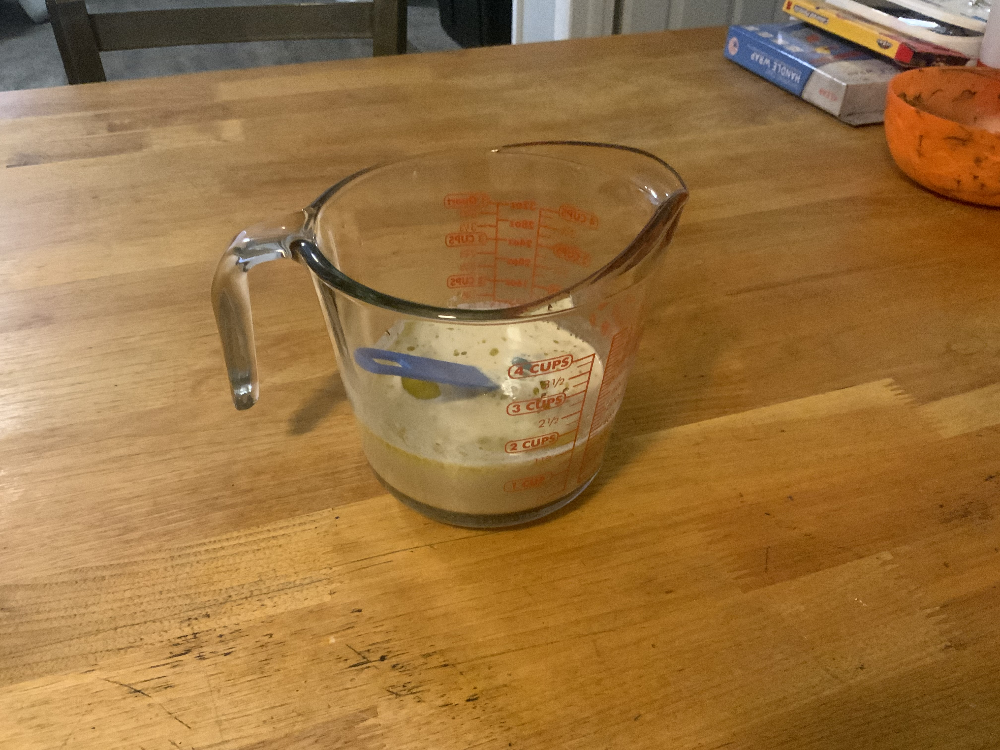This is my patented dough making strategy. I like to use as few dishes as possible so I stir in the flour as much as I can with a butter knife in the measuring glass. It’s a good wrist workout too.
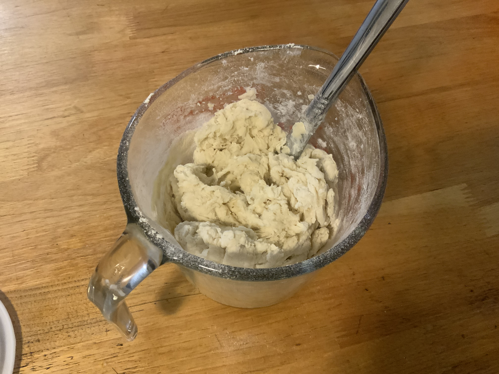Then I pour it out onto the flowered table and get kneading. We don’t have the cleanest apartment so just to be safe, I scrubbed the table 3 times (1 with all-purpose cleaner). There are quite a few sketchy looking stains all over the top. Might be the first time it’s been cleaned sense we moved in. After kneading the dough for 5 minuets, I like to admire it for a bit.
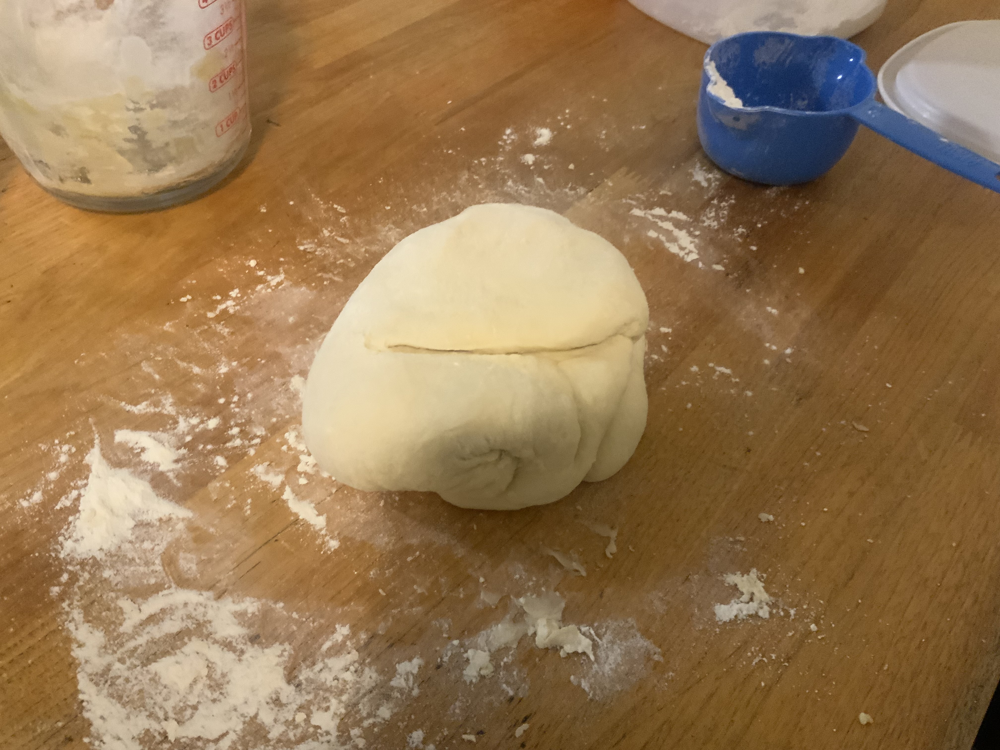Next, I cut the mother ball into 8 dough boys and let rise. If your making pizza just cut it into two dough dads. I had the genius idea of making the dough at 1:00 PM, then putting in the fridge so they would be ready at 5:00 PM. Usually, the dough takes only an hour to rise but I go to Walmart at 2:00PM. At 5:00 PM they were risen perfectly.
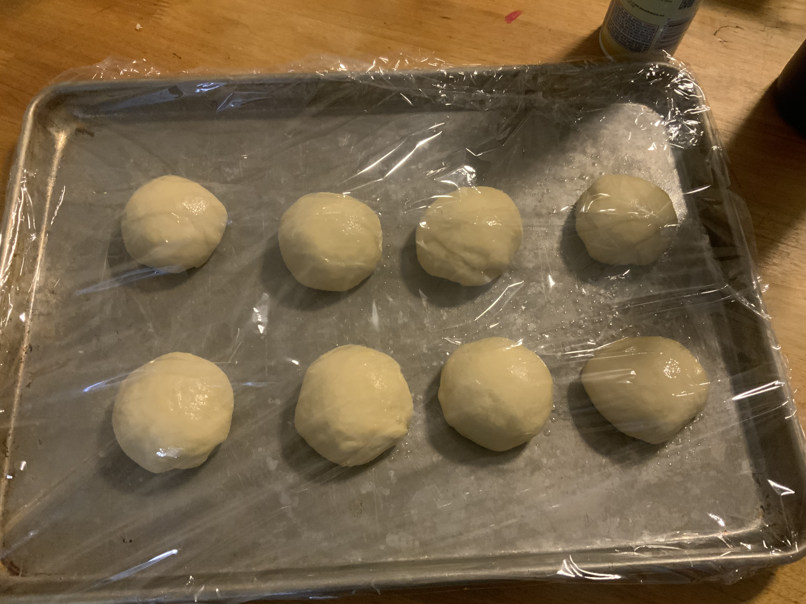What’s a calzone without filling? I’d call it a sad dough bag. For sauce I just used Prego Pasta Sauce with Italian seasoning, salt, and garlic powder. Sometimes I go a little overboard with the garlic powder, but this time got it right. Might help if I used a measuring spoon or something…
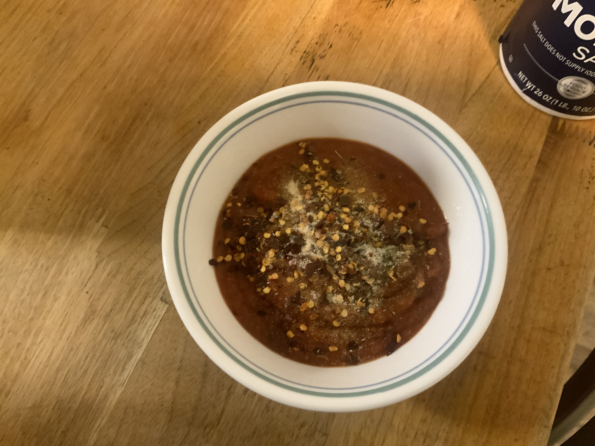Time to load them up! I mostly did pepperoni with cheese and onions, but I did do 2 wild cards. One was pineapple with bacon bits. Other was spicy boy with jalapenos. I tried to really pack ‘em in because sometimes there hard to taste.
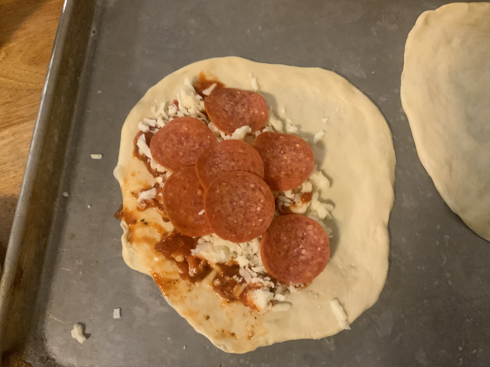 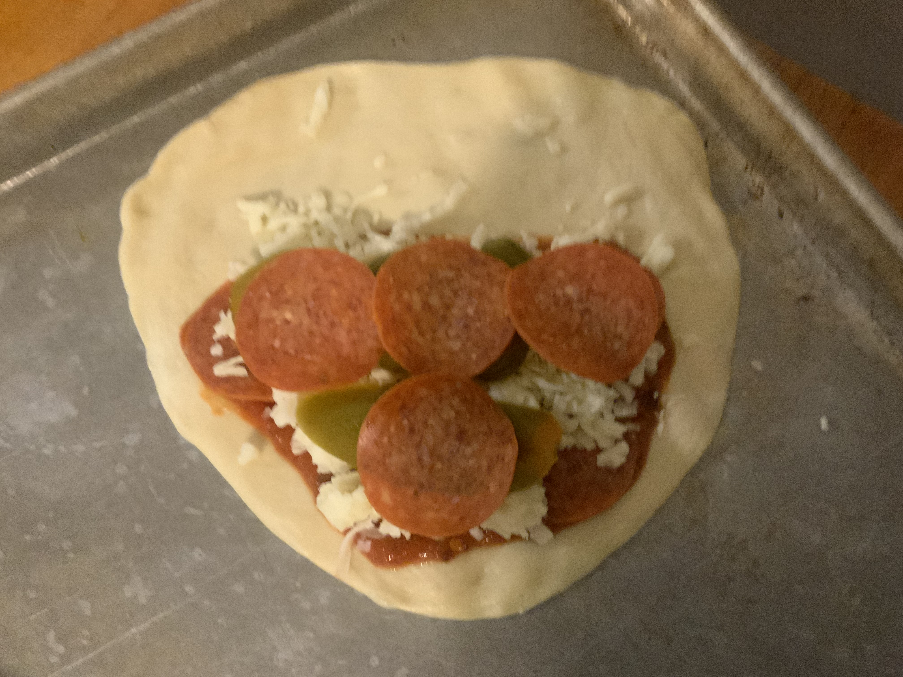 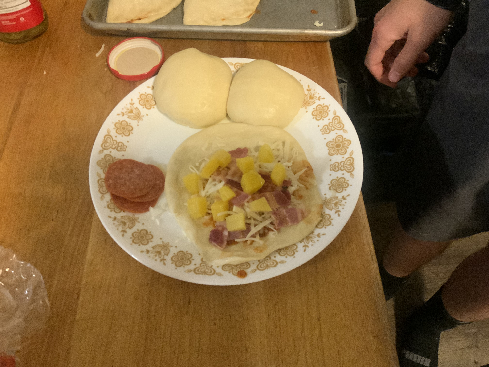With the calzones filled it was time to fold over and pinch the edges. As I made more of them, I think I improved. At the start I was trying to cram to much sauce and pepperonis in. Then the sauce would get in between the edges of the dough, and they wouldn’t stick so good.
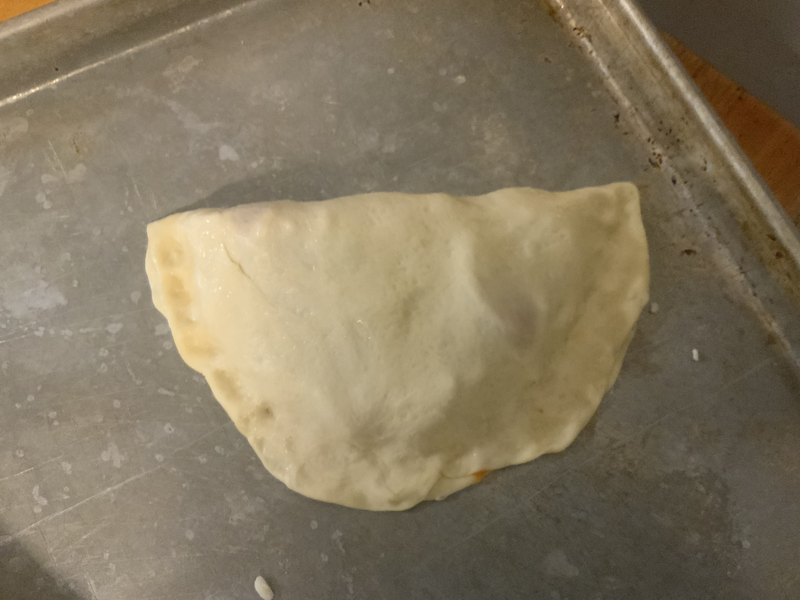All that’s left is to bake them! I cut vent slits in the tops and lubed the top and bottom with olive oil. Mostly for looks, I sprinkled some parmesan cheese on them too. Chuck ‘em in the oven.
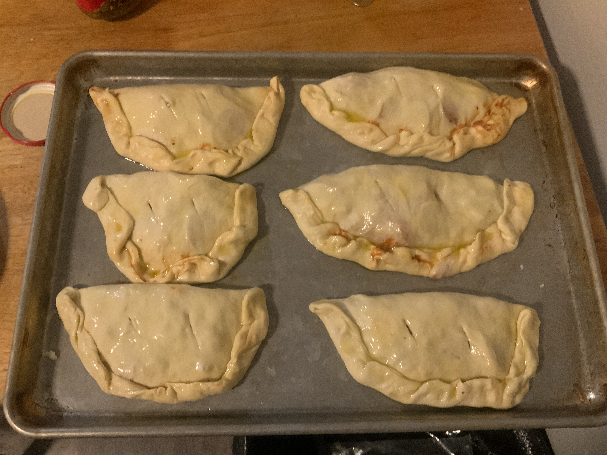Eat! These were defiantly a 10/10. Pan pizza is good but sometimes it’s nice to get some variety. I was the lucky guy who got the jalapeno one. I think I added the right amount although the peppers turned into a puree while baking. The one thing I would change next time I make these is add more cheese. When you have crust on the top and the bottom, at least double the cheese is needed. I cooked them in two batches. This is a pic of the second batch. The tops look really good, but the bottoms look like they were cooked on a campfire. Those are a little to browned even for me. When I saw the smoke coming out of the oven, I thought it was just the oil in the pan burning. Guess not. Luckily, we don’t have to worry about the smoke alarm bothering us ‘cause one of the guys unplugged it. I think it needed a new 9v and wouldn’t stop beeping.
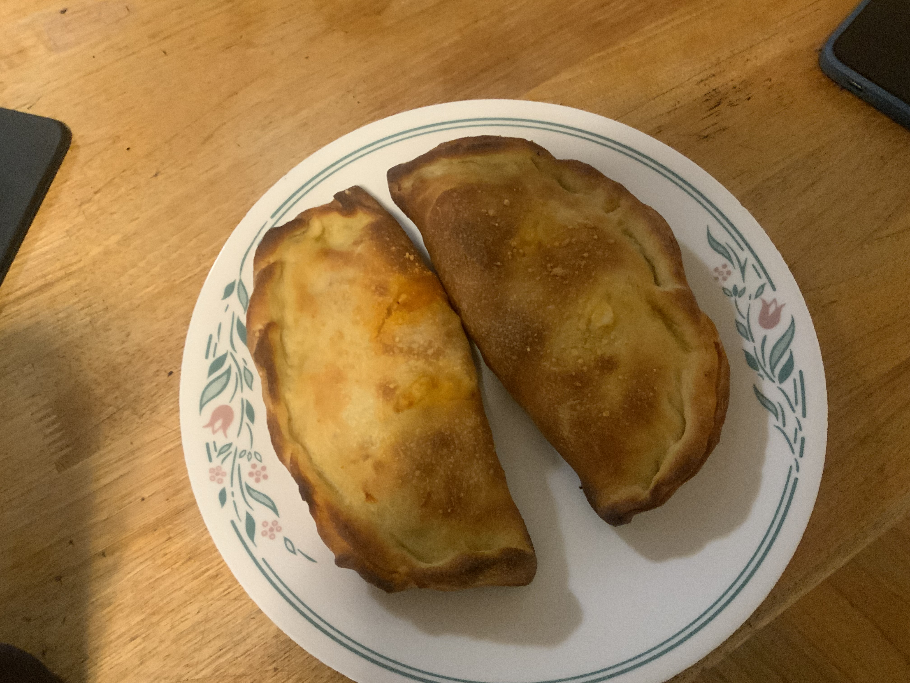